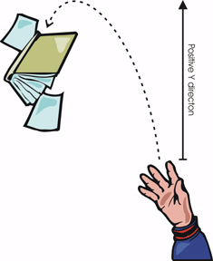

Top
Projectile Motion (conceptual)
A book is thrown upward and outward, so that its path makes a parabola. (Air resistance is neglected.) Take up to be the positive y-direction.
At the top of the parabola, what are the vertical components of the velocity and acceleration?